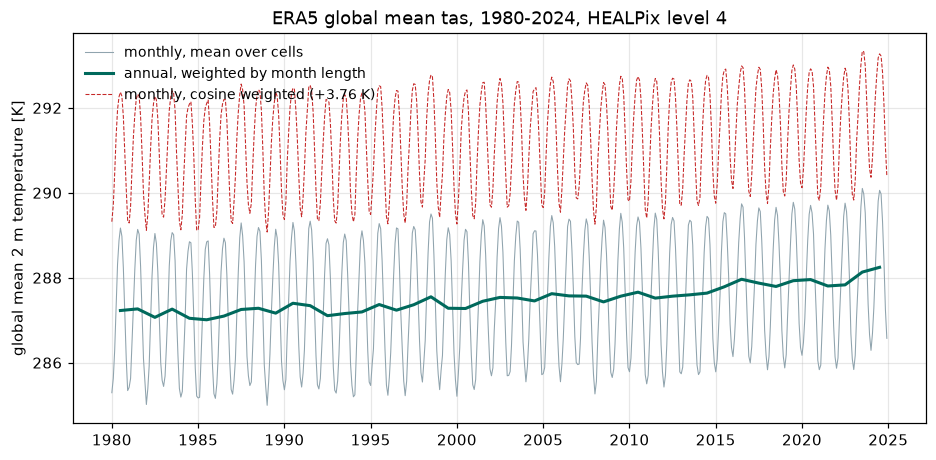

The global mean is just a mean¶
On a regular lon/lat grid, averaging a field over the globe is a small trap with a well known fix: cells near the poles are narrow, so you weight by the cosine of latitude before you average. Forget it and your global mean temperature comes out several kelvin too cold, because you counted the Arctic as though it were as large as the tropics.
HEALPix removes the trap rather than fixing it. Every cell on the sphere has exactly the same area, at every level, everywhere. The weights are all equal, so the area weighted mean and the arithmetic mean are the same number and there is nothing to remember.
Forty years of monthly means¶
This one reads hundreds of time steps rather than one map, so it uses the coarse end of the pyramid. A global mean has no spatial detail left in it by definition, and level 4 gives the same answer as level 8 to well inside the line width.
import matplotlib.pyplot as plt
import numpy as np
import xarray as xr
URL = "s3://reanalysis/healpix/era5/P1M/level_4.zarr"
S3 = {"anon": True, "endpoint_url": "https://s3.waterpark.dkrz.de"}
ds = xr.open_zarr(URL, storage_options=S3, chunks=None)
field = ds["tas"].sel(time=slice("1980", "2024"))
print(f"{field.sizes['time']} months x {field.sizes['cell']} cells")
print(f"{field.nbytes / 1e6:.0f} MB")
The average¶
That is the whole calculation. No weights, no cos(lat), no cell area
array to look up or carry around.
Checking it against the wrong answer¶
It is worth seeing what the reflex costs here. Applying cosine weights to a grid that is already equal area does not leave the answer alone: it tilts the average towards the equator, and the resulting bias is far larger than any signal you would be looking for.
cos_weights = xr.DataArray(
np.cos(np.deg2rad(ds["latitude"].values)), dims="cell"
)
wrongly_weighted = field.weighted(cos_weights).mean("cell").load()
offset = float((wrongly_weighted - global_mean).mean())
print(f"cosine weighting shifts the global mean by {offset:+.2f} K")
One weighting you do still need¶
Equal area settles space. It says nothing about time, and months are not the same length. An annual mean built from monthly means has to weight by the number of days in each month, or February counts as much as January.
The error is small, a few hundredths of a kelvin, which is precisely what makes it dangerous: it is invisible in a plot and the same size as the trends people fit to these series.
days = field["time"].dt.days_in_month
annual = (
(global_mean * days).groupby("time.year").sum()
/ days.groupby("time.year").sum()
)
annual_unweighted = global_mean.groupby("time.year").mean()
print(f"largest difference between the two annual means: "
f"{float(abs(annual - annual_unweighted).max()):.3f} K")
The plot¶
fig, ax = plt.subplots(figsize=(10, 4.6))
ax.plot(global_mean.time, global_mean, color="#90a4ae", lw=0.7,
label="monthly, mean over cells")
ax.plot(
[np.datetime64(f"{y}-07-01") for y in annual.year.values], annual,
color="#00695c", lw=2.0, label="annual, weighted by month length",
)
ax.plot(global_mean.time, wrongly_weighted, color="#c62828", lw=0.7, ls="--",
label=f"monthly, cosine weighted ({offset:+.2f} K)")
ax.set_ylabel("global mean 2 m temperature [K]")
ax.set_title("ERA5 global mean tas, 1980-2024, HEALPix level 4")
ax.grid(alpha=0.3)
ax.legend(frameon=False, loc="upper left", fontsize=9)
fig.savefig("02_global_mean.png", dpi=110, bbox_inches="tight", facecolor="white")

The global mean is just a mean
What equal area buys you¶
It is not only a convenience for global means. It is what makes an average over an arbitrary set of cells correct without weights, what makes a zonal mean over a ring correct without weights, and what makes coarsening the pyramid a plain average of four numbers rather than an area weighted sum. Several later examples are one line long for this reason alone.
Run it yourself: examples/02_global_mean.py